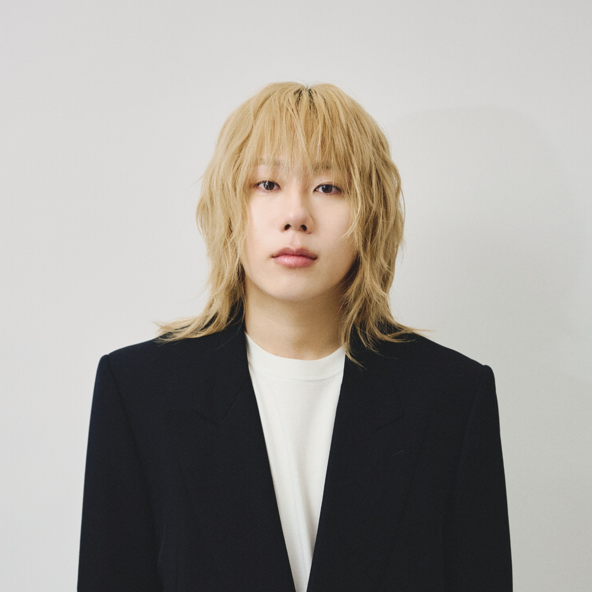
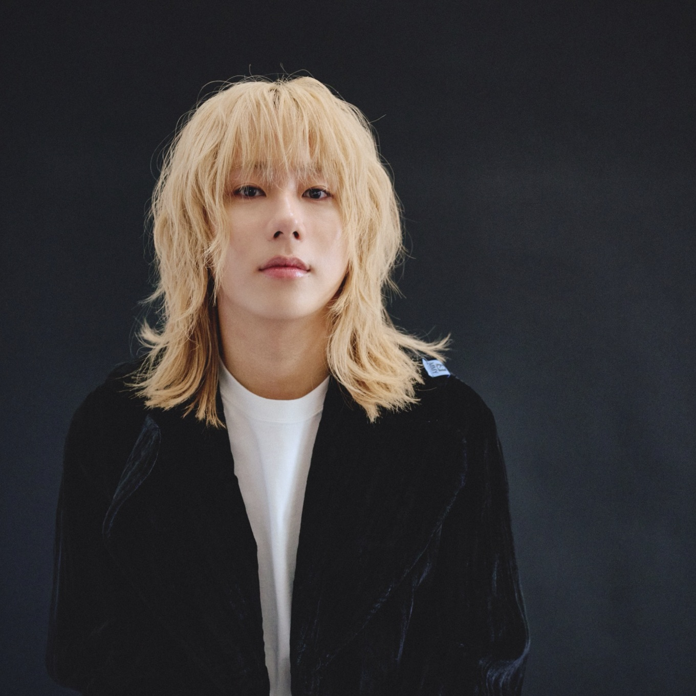

レギュラーメディア
レギュラーメディアを読み込んでいます。
ニュース
ニュースを読み込んでいます。

プロフィール
岸谷蘭丸
メディアでの発信と、留学に関わる事業。
複数の領域で活動する岸谷蘭丸の情報を、ひとつの場所に。
この欄には、本人が確認した紹介文や略歴を掲載します。現在は、文字量とレイアウトを確認するための仮原稿です。
- 活動
- メディア出演・発信・事業
- 関連事業
- MMBH留学
略歴・肩書き・掲載範囲は、本人との打ち合わせ後に確定します。

レギュラーメディアを読み込んでいます。
ニュースを読み込んでいます。

岸谷蘭丸
メディアでの発信と、留学に関わる事業。
複数の領域で活動する岸谷蘭丸の情報を、ひとつの場所に。
この欄には、本人が確認した紹介文や略歴を掲載します。現在は、文字量とレイアウトを確認するための仮原稿です。
略歴・肩書き・掲載範囲は、本人との打ち合わせ後に確定します。